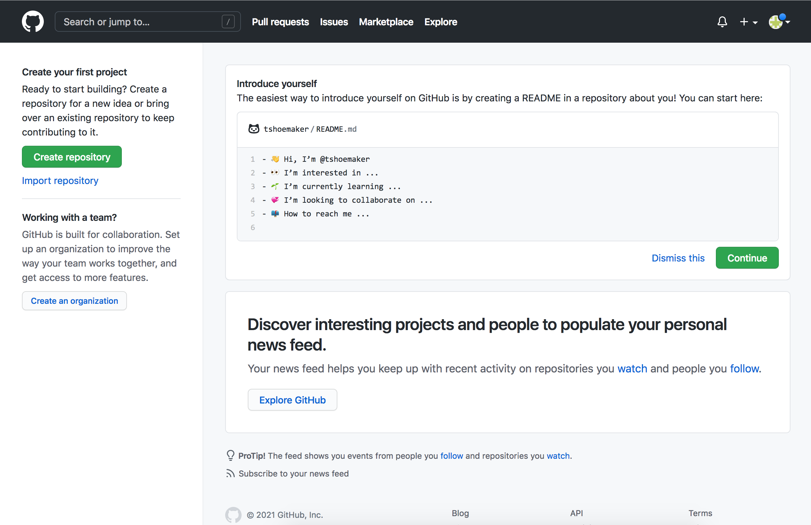
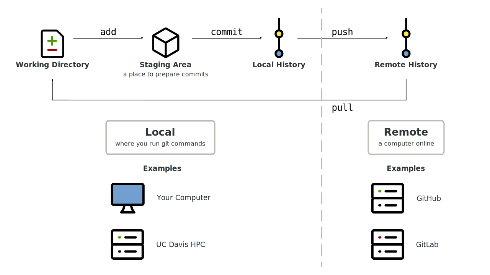

2. Remote Repositories#
Learning Goals
After this lesson, you should be able to:
Explain what GitHub is and how it relates to Git
Create an SSH key in order to authenticate with GitHub
Explain the difference between a local and remote repository
Clone a remote repository (on GitHub) to your computer
Push changes to a remote repository
Pull changes from a remote repository
As a distributed version control system (Section 1.1.1), one of Git’s major features is that you can share commits between repositories. From the perspective of a repository, the repository is local and all other repositories are remote. Remote repositories, or remotes, are typically stored on some other computer connected to yours by a network (such as the Internet). In this chapter, you’ll learn how to use Git to send and receive commits from remote repositories.
2.1. GitHub#
GitHub is a hosting service for Git repositories, much like Google Drive and Dropbox are hosting services for files. You don’t have to use GitHub or competing services (such as GitLab and BitBucket) in order to use Git, but doing so provides a convenient way to share, collaborate on, and back up repositories.
Important
Keep in mind that Git and GitHub are different things. Git is a version control system, while GitHub is a hosting service built to support Git.
We’ll use a remote repository hosted on GitHub to demonstrate how to share commits, but all of the Git commands described will work with any remote repository.
Note: GitHub Desktop
GitHub also offers an application called GitHub Desktop, which allows users to manage their local repositories with a point-and-click graphical user interface (GUI).
Ultimately, it’s a matter of preference whether you use the GUI or stick with the command line for your own projects, but it’s a good idea to first become proficient at interacting with Git via the command line. The primary reason for this is that not every computer you use will have GitHub Desktop installed—or even have graphics! Many computing servers offer command line-only access, and if you ever want to use Git repositories on these machines, you’ll need to do so without GitHub Desktop.
2.1.1. Making an Account#
To use GitHub, you need to make a (free) account. Go to GitHub and click “Sign Up” in the top-right corner of the page. This should take you to a form, which asks you to enter a username, email address, and password. After you’ve entered in this information (and completed a quick CAPTCHA), GitHub will make you an account. Then, the site will prompt you to complete an optional survey. Fill it out, or scroll to the bottom to skip it.
Either way, you’ll need to then verify your email address. Go to your inbox and look for an email from GitHub. Click the “Verify email address” button. Doing so will take you to your profile, where, if you’d like, you can add a few details about yourself.

You now have a GitHub account!
2.1.2. Connecting with SSH#
To connect to GitHub from the command line, you must have a GitHub account and a way to authenticate, or establish your identity (prove that you are who you say you are). GitHub requires authentication as a security measure, so that individuals and teams can control who has access to their repositories.
You can establish your identity with an SSH key, a kind of cryptographic key. An SSH key consists of two separate key files:
A public key file which can be used to encrypt data. The public key is meant to be freely shared, so that people (or servers) can encrypt data they want to securely send to you.
A private key file which can be used to decrypt data that was encrypted with the associated public key. The private key is meant for you alone, so that only you can decrypt and use data that people send to you. Never share your private key with anyone else.
SSH keys are much more secure than passwords, which is one reason why GitHub uses them for authentication. GitHub provides detailed documentation about how to create an SSH key and add the public key to your GitHub account.
Important
Work through the following sections of the documentation to set up SSH key authentication with GitHub:
Don’t skip this part—it’s necessary if you want to use GitHub and follow along with the subsequent examples.
Note: What is SSH?
SSH stands for secure shell protocol, a protocol for communication between two computers. The “secure” in secure shell means that all messages sent between the computers are encrypted. This makes it practically impossible for a third party to see what’s being sent.
Git uses SSH to connect GitHub. Git can also use SSH to connect to other servers hosting repositories.
{kind=link}
{kind=link}
{kind=link}
{kind=link}
2.3. Collaborating#
Uploading a repository to GitHub so that it’s available to others, as in Section 2.2, is the first step towards collaboration. In this section, you’ll learn the next steps: how to download someone else’s repository, how to add someone as a collaborator to your repository, and how to send commits to and receive commits from a collaborator.
Important
For this part, you’ll need to work with a partner. Take a moment to find a partner and exchange GitHub usernames. Pay careful attention to their username’s spelling and capitalization.
Throughout this section, we’ll refer to your partner’s username as PARTNER.
Anywhere you see PARTNER, replace it with their actual username.
In your web browser, navigate to the main page for your partner’s GitHub repository, which will be at:
https://github.com/PARTNER/PARTNER_first_shared_repo
Make sure you can get to the page before proceeding. If you get a 404 error, ask your partner to check that you’ve spelled and capitalized their username correctly.
2.3.1. Cloning a Repository#
In order to use or contribute to a remote repository, you first need to clone—download a copy of—the repository to your computer. Let’s try it out with your partner’s repository. On their repository’s main page, click on the green “Code” button, select the “Local” tab, and select “SSH”. Then copy the listed URL to your clipboard. It will look something like this:
git@github.com:PARTNER/PARTNER_first_shared_repo.git
The URL will have your partner’s GitHub username rather than PARTNER.
Next, open a terminal and navigate to your projects directory:
cd ~/projects/
Then use the git clone command to clone a copy of your partner’s repository.
You’ll need to paste the URL you copied to the end of the command:
git clone git@github.com:PARTNER/PARTNER_first_shared_repo.git
Cloning into 'PARTNER_first_shared_repo'...
remote: Enumerating objects: 3, done.
remote: Counting objects: 100% (3/3), done.
remote: Total 3 (delta 0), reused 3 (delta 0), pack-reused 0 (from 0)
Receiving objects: 100% (3/3), done.
Git will display some details about what it cloned from the remote repository.
You now have a copy of your partner’s repository as
PARTNER_first_shared_repo/ in your projects directory. Use a text editor to
take a look at their repo’s README.
2.3.2. Adding a Collaborator#
Anyone can clone a public repository, but only the owner of the repository and their approved collaborators can push commits. In this part, you’ll make your partner an approved collaborator on your shared repository, so that they can add a reply to the question in the README.
Open a web browser to your repository’s main page on GitHub. Click on the “Settings” button. You’ll be taken to a page that looks like this:
{kind=link}
On the left side, click on “Collaborators”. GitHub might ask you to enter your password or complete two-factor authentication. Once you’ve done that, you’ll end up at a page like this:
{kind=link}
Click on the green “Add people” button near the bottom of the page, then enter your partner’s GitHub username in the popup that appears. Then tell your partner to check their email (the one they used to register with GitHub) for an invitation to collaborate on your repository.
Both you and your partner need to accept the invitations before proceeding.
2.3.3. Pushing Commits#
It’s time to answer the question your partner put in their repository’s README.
Go back to the terminal, and navigate to cloned copy of your partner’s
repository. Open README.md with a text editor and add add a short reply to
the question, like this:
# README
Hi, I'm Tyler. I research language technology, focusing on how methods in
natural language processing crosscut the interpretive and theoretic frameworks
of literary and media studies.
What kinds of tools do you use to edit code?
## Reply
Hi Tyler! I mostly use Jupyter, RStudio, and Vim to edit code.
Save the changes and exit the text editor. Use Git to add and commit the changes:
git add README.md
git commit
Go back to Section 1.4 if you need to refresh your memory of these commands.
You can send the commit to your partner by pushing it to their repository on GitHub. To do this, run:
git push
Enumerating objects: 5, done.
Counting objects: 100% (5/5), done.
Delta compression using up to 4 threads
Compressing objects: 100% (2/2), done.
Writing objects: 100% (3/3), 1.46 KiB | 1.46 MiB/s, done.
Total 3 (delta 1), reused 0 (delta 0), pack-reused 0 (from 0)
remote: Resolving deltas: 100% (1/1), completed with 1 local object.
To github.com:PARTNER/PARTNER_first_shared_repo.git
dcad700..be2054a main -> main
After pushing the commit, check in with your partner. Confirm that they can see the commit you made on their repository’s GitHub page, and check that you can see the commit they made on your repository’s GitHub page. If anything doesn’t seem right, try working through the steps again.
2.3.4. Pulling Commits#
Section 2.3.3 explained how to push commits from a local repository to a remote repository. The counterpart is pulling commits from a remote repository to a local one. When you’re working collaboratively, you can get commits your collaborators have pushed to GitHub (or any other remote) by pulling them to your local repository.
It’s time to pull the commit your partner made in
Section 2.3.3. Open a terminal again and navigate to your
repository. Then run git pull:
git pull
Git should print output that looks something like this:
remote: Enumerating objects: 5, done.
remote: Counting objects: 100% (5/5), done.
remote: Total 3 (delta 0), reused 0 (delta 0), pack-reused 0 (from 0)
Unpacking objects: 100% (3/3), 918 bytes | 918.00 KiB/s, done.
From github.com:nick-ulle/nick-ulle_first_shared_repo
c4bae61..260a2b4 main -> origin/main
Updating c4bae61..260a2b4
Fast-forward
README.md | 1 +
1 file changed, 1 insertion(+)
After pulling the commit, inspect the README.md file with a text editor to
confirm that it now contains the message from your partner. If it does,
congratulations! You’ve successfully used Git and GitHub to collaborate with
someone.
2.4. The Git Workflow#

A typical Git workflow—as illustrated in the figure above—is:
Pull recent changes from the remote with
git pull.Make some changes locally.
Stage your changes with
git add.Commit your changes with
git commit.Push the changes to the remote with
git push.Repeat steps 1-5 until the project is finished.
There are lots of steps in this process, so there are lots of places where it can go wrong. Pay attention to error messages and search online if you get stuck. Lots of people use Git, so your question has probably been asked and answered. 😃
See also
Pro Git is the definitive Git resource and an excellent reference to keep at hand as you begin to work with Git.